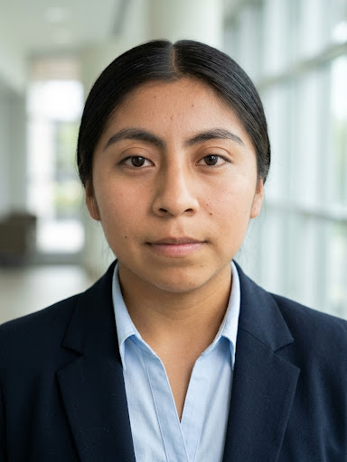

♡
Personal y social
Reflexiones sobre mis fortalezas, valores, convivencia y colaboración con otras personas.
AutoconocimientoConvivencia
Estudiante de Ingeniería Informática con interés en redes informáticas y soporte técnico. Este espacio reúne mi trayectoria académica, proyectos y reflexiones de desarrollo personal y vocacional.
Un espacio para presentar quién soy como estudiante, qué he aprendido y hacia dónde quiero orientar mi desarrollo.
Reflexiones sobre mis fortalezas, valores, convivencia y colaboración con otras personas.
Mi formación en informática, prácticas académicas y proyectos tecnológicos que estoy desarrollando.
Mi CV, conocimientos técnicos, cursos e interés en redes y soporte técnico.
Seguir aprendiendo y fortalecer mis conocimientos básicos para crecer en el área de redes informáticas y soporte técnico.
Me considero una persona responsable, creativa y amable. En esta etapa de mi formación busco conocer mejor mis fortalezas, convivir de manera respetuosa y aprender de cada experiencia dentro y fuera del aula.
Me considero responsable porque procuro cumplir con mis actividades y entregar mis trabajos. También soy creativa, ya que me gusta aportar ideas para los proyectos, y amable al relacionarme con mis compañeros. Estas cualidades me ayudan a enfrentar nuevos retos y seguir aprendiendo.
Me gusta colaborar, aportar ideas y repartir las tareas para que el equipo pueda avanzar de manera organizada. Considero importante escuchar las opiniones de los demás, mantener una comunicación respetuosa y apoyar cuando alguien lo necesita. Trabajar en equipo me permite aprender de otras personas y encontrar distintas formas de resolver una actividad.
Para mí, el respeto y la honestidad son valores fundamentales. Procuro escuchar a los demás sin descalificar sus opiniones, hablar con sinceridad y reconocer tanto mis aciertos como las cosas que necesito mejorar. Considero que estos valores ayudan a crear un ambiente de confianza en el salón y en los trabajos en equipo.
Durante mi formación he aprendido que puedo desarrollar nuevas habilidades si tengo disposición para practicar y preguntar cuando algo se me dificulta. Quiero seguir mejorando mi organización del tiempo, tener más confianza al explicar mis ideas y ser constante al trabajar en mis proyectos. Mi objetivo es aprovechar las experiencias escolares para crecer tanto en lo personal como en lo académico.
Durante mi formación he trabajado en prácticas académicas de desarrollo web, programación, APIs y propuestas tecnológicas. Los proyectos se presentan como trabajos académicos y su estado debe actualizarse según sus avances reales.
Proyecto integrador con enfoque educativo y cultural, orientado a promover el conocimiento de la lengua y cultura mazahua mediante una dinámica interactiva. La propuesta contempla tarjetas RFID, un lector, un microcontrolador, un indicador LED, un altavoz y un botón.
En desarrolloPráctica académica para crear un sitio web temático con Astro, organizando contenido e imágenes para presentar modelos y secciones del proyecto.
En desarrolloEjercicios académicos de creación de interfaces web y rutas de API, incluyendo una práctica de rutas que muestran información de animales y ejercicios de integración entre una interfaz y un servicio.
Práctica académica · avance por actualizarPráctica académica de desarrollo de una página temática sobre guitarras utilizando herramientas de desarrollo web y componentes de interfaz.
Práctica académica · avance por actualizarMi interés profesional está orientado a las redes informáticas y el soporte técnico. Quiero fortalecer mis conocimientos mediante la práctica, aprender a resolver problemas tecnológicos y desarrollar más seguridad al configurar equipos y trabajar con herramientas informáticas.
Ingeniería Informática
Tecnológico de Estudios Superiores de San Felipe del Progreso
Periodo: 2024–2027 · 5.º semestre
Redes informáticas y soporte técnico
Nivel de conocimientos declarado: básico.
Cursos de Oracle y Huawei.
He tenido acercamiento a cursos y contenidos de Oracle y Huawei como parte de mi formación. Me interesa seguir aprovechando recursos de aprendizaje en línea y, cuando corresponda, organizar los nombres y constancias de los cursos que haya concluido.
Estudiante de quinto semestre de Ingeniería Informática con interés en redes y soporte técnico. Durante mi formación he trabajado en prácticas académicas relacionadas con cableado de red, configuración de routers o switches e instalación de programas y sistemas operativos. Busco seguir aprendiendo y fortalecer mis conocimientos tecnológicos.
Correo: magalicorarubi14@gmail.com
Ubicación: Estado de México
Idiomas: Español
Experiencia: proyectos académicos; no se declara experiencia laboral.
Este apartado presenta mi perfil académico y mis áreas de interés. La información sobre cursos se puede ampliar con sus nombres oficiales y constancias cuando estén disponibles.
Presentación académica, habilidades técnicas y áreas de interés profesional.

Estudiante de Ingeniería Informática
Contactar por correo ↗Estudiante de quinto semestre de Ingeniería Informática con interés en redes informáticas y soporte técnico. Busco fortalecer mis conocimientos mediante la práctica, aprender a resolver problemas tecnológicos y seguir desarrollando mis habilidades.
Ingeniería Informática
Tecnológico de Estudios Superiores de San Felipe del Progreso
Periodo indicado: 2024–2027 · 5.º semestre
Nivel declarado: básico en redes y soporte técnico.
Acercamiento a contenidos de Oracle y Huawei. Interés en continuar aprendiendo sobre redes informáticas, soporte técnico y herramientas de desarrollo.
Antes de compartir este CV para una vacante, revisa que los periodos académicos, cursos y conocimientos estén actualizados. No se declara experiencia laboral formal.